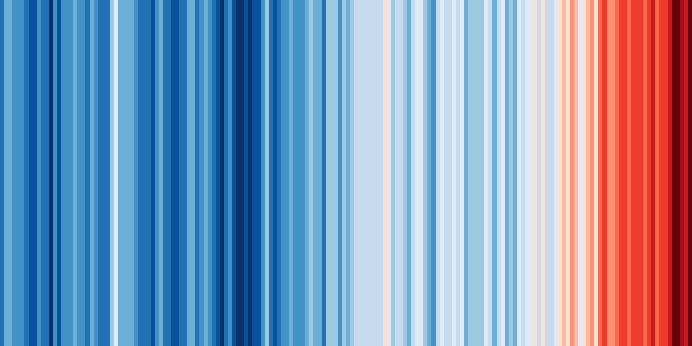

Writing your own recipe
Last updated on 2024-11-21 | Edit this page
Estimated time: 45 minutes
Introduction
One of the key strengths of ESMValTool is in making complex analyses reusable and reproducible. But that doesn’t mean everything in ESMValTool needs to be complex. Sometimes, the biggest challenge is in keeping things simple. You probably know the ‘warming stripes’ visualization by Professor Ed Hawkins. On the site https://showyourstripes.info{:target=“_blank”} you can find the same visualization for many regions in the world.
Shared by Ed Hawkins under a Creative Commons 4.0 Attribution International licence. Source: https://showyourstripes.info
In this episode, we will reproduce and extend this functionality with ESMValTool. We have prepared a small Python script that takes a NetCDF file with timeseries data, and visualizes it in the form of our desired warming stripes figure.
The diagnostic script that we will use is called
warming_stripes.py and can be downloaded here.
Download the file and store it in your working directory. If you want, you may also have a look at the contents, but it is not necessary to do so for this lesson.
We will write an ESMValTool recipe that takes some data, performs the necessary preprocessing, and then runs this Python script.
Drawing up a plan
Previously, we saw that running ESMValTool executes a number of tasks. What tasks do you think we will need to execute and what should each of these tasks do to generate the warming stripes?
Answer
In this episode, we will need to do the following two tasks:
- A preprocessing task that converts the gridded temperature data to a timeseries of global temperature anomalies
- A diagnostic tasks that calls our Python script, taking our preprocessed timeseries data as input.
{: .solution} {: .challenge}
Building a recipe from scratch
The easiest way to make a new recipe is to start from an existing one, and modify it until it does exactly what you need. However, in this episode we will start from scratch. This forces us to think about all the steps involved in processing the data. We will also deal with commonly occurring errors through the development of the recipe.
Remember the basic structure of a recipe, and notice that each component is extensively described in the documentation under the section, [“Overview”][recipe-overview]{:target=“_blank”}:
- [documentation][recipe-section-documentation]{:target=“_blank”}
- [datasets][recipe-section-datasets]{:target=“_blank”}
- [preprocessors][recipe-section-preprocessors]{:target=“_blank”}
- [diagnostics][recipe-section-diagnostics]{:target=“_blank”}
This is the first place to look for help if you get stuck.
Open a new file called recipe_warming_stripes.yml:
Let’s add the standard header comments (these do not do anything), and a first description.
YAML
# ESMValTool
# recipe_warming_stripes.yml
---
documentation:
description: Reproducing Ed Hawkins' warming stripes visualization
title: Reproducing Ed Hawkins' warming stripes visualization.Notice that yaml always requires two spaces
indentation between the different levels. Pressing ctrl+o
will save the file. Verify the filename at the bottom and press enter.
Then use ctrl+x to exit the editor.
We will try to run the recipe after every modification we make, to see if it (still) works!
In this case, it gives an error. Below you see the last few lines of the error message.
...
yamale.yamale_error.YamaleError:
Error validating data '/home/users/username/esmvaltool_tutorial/recipe_warming_stripes.yml'
with schema
'/apps/jasmin/community/esmvaltool/miniconda3_py311_23.11.0-2/envs/esmvaltool/lib/python3.11/
site-packages/esmvalcore/_recipe/recipe_schema.yml'
documentation.authors: Required field missing
2024-05-27 13:21:23,805 UTC [41924] INFO
If you have a question or need help, please start a new discussion on
https://github.com/ESMValGroup/ESMValTool/discussions
If you suspect this is a bug, please open an issue on
https://github.com/ESMValGroup/ESMValTool/issues
To make it easier to find out what the problem is, please consider attaching the
files run/recipe_*.yml and run/main_log_debug.txt from the output directory.
{: .error}
We can use the the log message above, to understand why ESMValTool
failed. Here, this is because we missed a required field with author
names. The text
documentation.authors: Required field missing tells us
that. We see that ESMValTool always tries to validate the recipe at an
early stage. Note also the suggestion to open a GitHub issue if you need
help debugging the error message. This is something most users do when
they cannot understand the error or are not able to fix it on their
own.
Let’s add some additional information to the recipe. Open the recipe file again, and add an authors section below the description. ESMValTool expects the authors as a list, like so:
To bypass a number of similar error messages, add a minimal diagnostics section below the documentation. The file should now look like:
YAML
# ESMValTool
# recipe_warming_stripes.yml
---
documentation:
description: Reproducing Ed Hawkins' warming stripes visualization
title: Reproducing Ed Hawkins' warming stripes visualization.
authors:
- doe_john
diagnostics:
dummy_diagnostic_1:
scripts: nullThis is the minimal recipe layout that is required by ESMValTool. If we now run the recipe again, you will probably see the following error:
ValueError: Tag 'doe_john' does not exist in section
'authors' of /apps/jasmin/community/esmvaltool/ESMValTool_2.10.0/esmvaltool/config-references.yml
{: .error}
Pro tip: config-references.yml
The error message above points to a file named [config-references.yml][config-references] This is where ESMValTool stores all its citation information. To add yourself as an author, add your name in the form
lastname_firstnamein alphabetical order following the existing entries, under the# Development teamsection. See the [List of authors][list-of-authors]{:target=“_blank”} section in the ESMValTool documentation for more information. {: .callout}
For now, let’s just use one of the existing references. Change the
author field to righi_mattia, who cannot receive enough
credit for all the effort he put into ESMValTool. If you now run the
recipe again, you should see the final message
ERROR No tasks to run!{: .output}
Although there is no actual error in the recipe, ESMValTool assumes you mistakenly left out a variable name to process and alerts you with this error message. ## Adding a dataset entry
Let’s add a datasets section.
Filling in the dataset keys
Use the paths specified in the configuration file to explore the data directory, and look at the explanation of the dataset entry in the [ESMValTool documentation][recipe-section-datasets]{:target=“_blank”}. For both the datasets, write down the following properties:
- project
- variable (short name)
- CMIP table
- dataset (model name or obs/reanalysis dataset)
- experiment
- ensemble member
- grid
- start year
- end year
Answers
key | file 1 | file 2 |
project | CMIP6 | CMIP5 |
short name | tas | tas |
CMIP table | Amon | Amon |
dataset | BCC-ESM1 | bcc-csm1-1|
experiment | historical | historical |
ensemble | r1i1p1f1 | r1i1p1 |
grid | gn (native grid) | N/A |
start year | 1850 | 1850 |
end year | 2014 | 2005 |Note that the grid key is only required for CMIP6 data, and that the extent of the historical period has changed between CMIP5 and CMIP6.
{: .solution} {: .challenge}
Let us start with the BCC-ESM1 dataset and add a datasets section to
the recipe, listing this single dataset, as shown below. Note that key
fields such as mip or start_year are included
in the datasets section here but are part of the
diagnostic section in the recipe example seen in Running
your first recipe.
YAML
# ESMValTool
# recipe_warming_stripes.yml
---
documentation:
description: Reproducing Ed Hawkins' warming stripes visualization
title: Reproducing Ed Hawkins' warming stripes visualization.
authors:
- doe_john
datasets:
- {dataset: BCC-ESM1, project: CMIP6, mip: Amon, exp: historical,
ensemble: r1i1p1f1, grid: gn, start_year: 1850, end_year: 2014}
diagnostics:
dummy_diagnostic_1:
scripts: nullThe recipe should run but produce the same message as in the previous case since we still have not included a variable to actually process. We have not included the short name of the variable in this dataset section because this allows us to reuse this dataset entry with different variable names later on. This is not really necessary for our simple use case, but it is common practice in ESMValTool.
Pro-tip: Automatically populating a recipe with all available datasets
You can select all available models for processing using
globpatterns or wildcards. An exampledatasetssection that uses all available CMIP6 models and ensemble members for thehistoricalexperiment is available [here] [include-all-datasets]{:target=“_blank”}. Note that you will have to set thesearch_esgfoption in theconfig_filetoalwaysso that you can download data from ESGF nodes as needed. {: .callout}
Adding the preprocessor section
Above, we already described the preprocessing task that needs to convert the standard, gridded temperature data to a timeseries of temperature anomalies.
Defining the preprocessor
Have a look at the available preprocessors in the [documentation][preprocessor]{:target=“_blank”}. Write down
- Which preprocessor functions do you think we should use?
- What are the parameters that we can pass to these functions?
- What do you think should be the order of the preprocessors?
- A suitable name for the overall preprocessor
Solution
We need to calculate anomalies and global means. There is an
anomaliespreprocessor which takes in as arguments, a time period, a reference period, and whether or not to standardize the data. The global means can be calculated with thearea_statisticspreprocessor, which takes an operator as argument (in our case we want to compute themean).The default order in which these preprocessors are applied can be seen [here][preprocessor-functions]{:target=“_blank”}:
area_statisticscomes beforeanomalies. If you want to change this, you can use thecustom_orderpreprocessor as described [here][recipe-section-preprocessors]{:target=“_blank”}. For this example, we will keep the default order..Let’s name our preprocessor
global_anomalies. {: .solution} {: .challenge}
Add the following block to your recipe file between the
datasets and diagnostics block:
Completing the diagnostics section
We are now ready to finish our diagnostics section. Remember that we want to create two tasks: a preprocessor task, and a diagnostic task. To illustrate that we can also pass settings to the diagnostic script, we add the option to specify a custom colormap.
Fill in the blanks
Extend the diagnostics section in your recipe by filling in the blanks in the following template:
YAML
diagnostics: <... (suitable name for our diagnostic)>: description: <...> variables: <... (suitable name for the preprocessed variable)>: short_name: <...> preprocessor: <...> scripts: <... (suitable name for our python script)>: script: <full path to python script> colormap: <... choose from matplotlib colormaps>Solution
YAML
diagnostics: diagnostic_warming_stripes: description: visualize global temperature anomalies as warming stripes variables: global_temperature_anomalies_global: short_name: tas preprocessor: global_anomalies scripts: warming_stripes_script: script: ~/esmvaltool_tutorial/warming_stripes.py colormap: 'bwr'{: .solution} {: .challenge}
You should now be able to run the recipe to get your own warming stripes.
Note: for the purpose of simplicity in this episode, we have not added logging or provenance tracking in the diagnostic script. Once you start to develop your own diagnostic scripts and want to add them to the ESMValTool repositories, this will be required. Writing your own diagnostic script is discussed in a later episode.
Bonus exercises
Below are a few exercises to practice modifying an ESMValTool recipe. For your reference, here’s a copy of the recipe at this point. This will be the point of departure for each of the modifications we’ll make below.
Specific location selection
On showyourstripes.org, you can download stripes for specific locations. Here we show how this can be done with ESMValTool. Instead of the global mean, we can pick a location to plot the stripes for. Can you find a suitable preprocessor to do this?
Solution
You can use
extract_pointorextract_regionto select a location. We usedextract_point. Here’s a copy of the recipe at this point and this is the difference from the previous recipe:DIFF
--- recipe_warming_stripes.yml +++ recipe_warming_stripes_local.yml @@ -10,9 +10,11 @@ - {dataset: BCC-ESM1, project: CMIP6, mip: Amon, exp: historical, ensemble: r1i1p1f1, grid: gn, start_year: 1850, end_year: 2014} preprocessors: - global_anomalies: - area_statistics: - operator: mean + anomalies_amsterdam: + extract_point: + latitude: 52.379189 + longitude: 4.899431 + scheme: linear anomalies: period: month reference: @@ -27,9 +29,9 @@ diagnostics: diagnostic_warming_stripes: variables: - global_temperature_anomalies: + temperature_anomalies_amsterdam: short_name: tas - preprocessor: global_anomalies + preprocessor: anomalies_amsterdam scripts: warming_stripes_script: script: ~/esmvaltool_tutorial/warming_stripes.py{: .solution} {:.challenge}
Different time periods
Split the diagnostic in two with two different time periods for the same variable. You can choose the time periods yourself. In the example below, we have chosen the recent past and the 20th century and have used variable grouping.
Solution
Here’s a copy of the recipe at this point and this is the difference with the previous recipe:
DIFF
--- recipe_warming_stripes_local.yml +++ recipe_warming_stripes_periods.yml @@ -7,7 +7,7 @@ datasets: - - {dataset: BCC-ESM1, project: CMIP6, mip: Amon, exp: historical, - ensemble: r1i1p1f1, grid: gn, start_year: 1850, end_year: 2014} + - {dataset: BCC-ESM1, project: CMIP6, mip: Amon, exp: historical, + ensemble: r1i1p1f1, grid: gn} preprocessors: anomalies_amsterdam: @@ -29,9 +29,16 @@ diagnostics: diagnostic_warming_stripes: variables: - temperature_anomalies_amsterdam: + temperature_anomalies_recent: short_name: tas preprocessor: anomalies_amsterdam + start_year: 1950 + end_year: 2014 + temperature_anomalies_20th_century: + short_name: tas + preprocessor: anomalies_amsterdam + start_year: 1900 + end_year: 1999 scripts: warming_stripes_script: script: ~/esmvaltool_tutorial/warming_stripes.py{: .solution} {:.challenge}
Different preprocessors
Now that you have different variable groups, we can also use different preprocessors. Add a second preprocessor to add another location of your choosing.
Solution
Here’s a copy of the recipe at this point and this is the difference with the previous recipe:
DIFF
--- recipe_warming_stripes_periods.yml +++ recipe_warming_stripes_multiple_locations.yml @@ -15,7 +15,7 @@ latitude: 52.379189 longitude: 4.899431 scheme: linear - anomalies: + anomalies: &anomalies period: month reference: start_year: 1981 @@ -25,18 +25,24 @@ end_month: 12 end_day: 31 standardize: false + anomalies_london: + extract_point: + latitude: 51.5074 + longitude: 0.1278 + scheme: linear + anomalies: *anomalies diagnostics: diagnostic_warming_stripes: variables: - temperature_anomalies_recent: + temperature_anomalies_recent_amsterdam: short_name: tas preprocessor: anomalies_amsterdam start_year: 1950 end_year: 2014 - temperature_anomalies_20th_century: + temperature_anomalies_20th_century_london: short_name: tas - preprocessor: anomalies_amsterdam + preprocessor: anomalies_london start_year: 1900 end_year: 1999 scripts:{: .solution}
{:.challenge}
Pro-tip: YAML anchors
If you want to avoid retyping the arguments used in your preprocessor, you can use YAML anchors as seen in the
anomaliespreprocessor specifications in the recipe above. {:.callout}
Additional datasets
So far we have defined the datasets in the datasets section of the recipe. However, it’s also possible to add specific datasets only for specific variables or variable groups. Take a look at the documentation to learn about the
additional_datasetskeyword [here][additional-datasets]{:target=“_blank”}, and add a second dataset only for one of the variable groups.Solution
Here’s a copy of the recipe at this point and this is the difference with the previous recipe:
DIFF
--- recipe_warming_stripes_multiple_locations.yml +++ recipe_warming_stripes_additional_datasets.yml @@ -45,6 +45,8 @@ preprocessor: anomalies_london start_year: 1900 end_year: 1999 + additional_datasets: + - {dataset: CanESM2, project: CMIP5, mip: Amon, exp: historical, ensemble: r1i1p1} scripts: warming_stripes_script: script: ~/esmvaltool_tutorial/warming_stripes.py{: .solution} {:.challenge}
Multiple ensemble members
You can choose data from multiple ensemble members for a model in a single line.
Solution
The
datasetsection allows you to choose more than one ensemble member Here’s a copy of the changed recipe to do that. Changes made are shown in the diff output below:DIFF
--- recipe_warming_stripes.yml 2024-05-27 15:37:52.340358967 +0100 +++ recipe_warming_stripes_multiens.yml 2024-05-27 22:18:42.035558837 +0100 @@ -10,7 +10,7 @@ - ensemble: r1i1p1f1, grid: gn, start_year: 1850, end_year: 2014} + ensemble: "r(1:2)i1p1f1", grid: gn, start_year: 1850, end_year: 2014}{: .solution} {:.challenge}
Pro-tip: Concatenating datasets
Check out the section on a different way to use multiple ensemble members or even multiple experiments at [Concatenating data corresponding to multiple facets] [concatenating-datasets]{:target=“_blank”}.
{: .callout}
{% include links.md %}